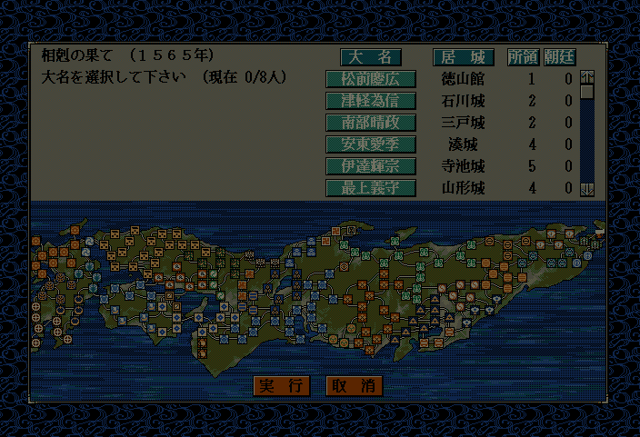

void カスタム::On_シナリオ大名選択直前(int シナリオ番号) {
}

void カスタム::On_シナリオ大名選択直前(int シナリオ番号) {
if (シナリオ番号==3) { // シナリオが３番で
string title = Get_シナリオ名(シナリオ番号);
if ( Is_文字列マッチ(title, "相剋の果て") ) { // タイトルに「相剋の果て」という文字列が含まれている
// 全てを巨城とする。
for ( int iCastleID=0; iCastleID < 最大数::城情報::配列数; iCastleID++ ) {
p城情報[iCastleID].巨城 = 1;
}
}
}
}